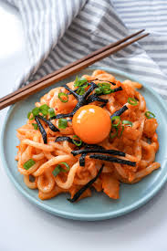

Creamy Mentaiko Udon

This creamy flavorful dish will easily become one of your favorite dishes to wow your guests. Mentaiko udon is a Japanese-Italian fusion pasta dish made with a creamy mentaiko sauce with udon noddles that absorbs the flavors but elevates it with its texture. The creamy, robust sauce clings to the plump strands of udon and the results are just perfection.
Ingredients
- Udon noodles
- Pollock roe or cod roe (Mentaiko)
- Heavy whipping cream
- soy sauce
- Kewpi (Japanese Mayo)
- Green onions
- Salt & Pepper
How to make this beutiful concoction
- In a large bowl combined prepared mentaiko, heavy cream, kewpie, and soy sauce
- Cook udon as instructed on package
- Add cooked udon into sauce and mix well
- Add salt and pepper to taste
- Plate the creamy mentaiko udon to a dish
- Top it off with green onions, seaweed bits, or even a egg yolk like in the picture
- Enjoy its amazing creamy goodness!
For more delecious recipes!